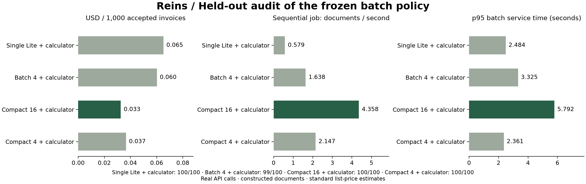

ENGINEERING CASE STUDY · SEPTEMBER 29, 2026
Fewer calls.
More accepted work per dollar.
Real Gemini 2.5 Flash-Lite API calls on constructed invoice text. The selected policy accepted all 100 audit documents while reducing estimated cost per accepted invoice by 50% against single-item execution.
| Policy | Accepted | USD / 1,000 accepted | Documents / second | p95 batch service |
|---|---|---|---|---|
| single-lite | 100/100 | $0.06520 | 0.58 | 2.48s |
| verbose-batch-4 | 99/100 | $0.06018 | 1.64 | 3.32s |
| compact-batch-16 | 100/100 | $0.03259 | 4.36 | 5.79s |
| compact-batch-4 | 100/100 | $0.03662 | 2.15 | 2.36s |

What Reins changed
Batch independent documents to share instructions, return compact field arrays, align answers by invoice identity, and retry only missing or invalid items. A deterministic Decimal calculator handles explicit tax-free arithmetic from the source. Every baseline receives the same calculator and alignment.
The deliverable contains five fields: invoice ID, seller, currency, amount due and due date. Compact output removes repeated keys and evidence quotes that this deliverable does not require. Applications that require evidence quotes need a different configuration.
A stronger comparison
Compact four-item batching also achieves 100/100. Compared with that baseline, the selected 16-item policy saves 11% and completes this sequential job at 2.03× the throughput. Most of the single-item improvement comes from batching and compact output; the additional gain comes from configuration selection.
The cost is higher batch service latency: p95 rises from 2.36s for compact four-item batches to 5.79s. The single-item baseline is 2.48s. Queueing behind earlier batches is excluded. This is an offline processing configuration, not evidence of faster interactive responses.
How the result was obtained
Four candidates were compared on 40 validation documents. The cheapest configuration meeting the observed acceptance floor was frozen before a 100-document audit. Audit IDs and amounts were new, while task patterns were shared with development. Compact four-item batching was added as a post-hoc stronger baseline, with no reselection.
Acceptance checks all five fields against deterministic ground truth. Paid fallback usage is included. The main round and additional baseline contain 221 calls, zero provider errors, and $0.0265535 in estimated token cost matching the local ledger. Prices are $0.10 per million input tokens and $0.40 per million output tokens; actual billing, credits and free quota may differ.
What did not work
The earlier model-only experiment selected Flash-Lite on validation, then missed two arithmetic cases on its 60-document test. The first batching round exposed unnecessary fallback from output-shape handling. A later round still missed arithmetic cases and stopped on a network timeout. Those attempts remain in the local benchmark artifacts, including two requests with unsettled costs. We did not merge their results into this final audit.
What this demonstrates
Reins can measure a task outcome, evaluate execution configurations and reduce model work for a repeatable extraction workload. It does not yet establish customer ROI, unique research defensibility, production error rates or performance across providers. A 100-case perfect score is not a zero-error guarantee. Results come from one run per policy and remain sensitive to network and provider load.
The next useful test is a customer dataset with independent document formats, repeated runs, matched concurrency and an explicit latency target. The selector already accepts a batch service latency constraint.